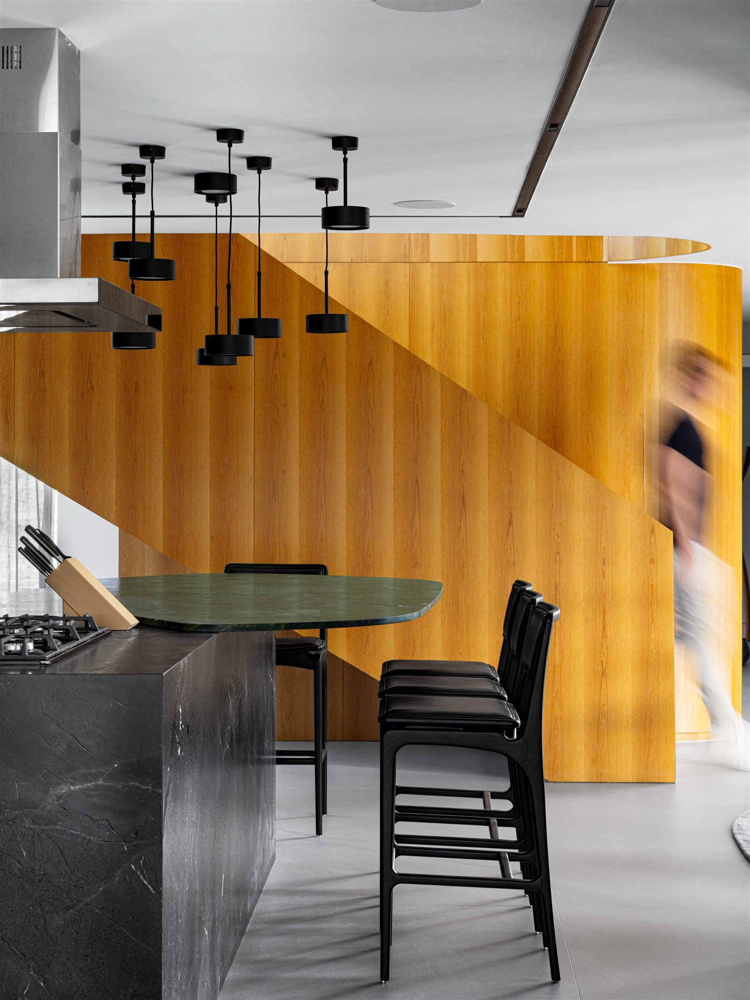
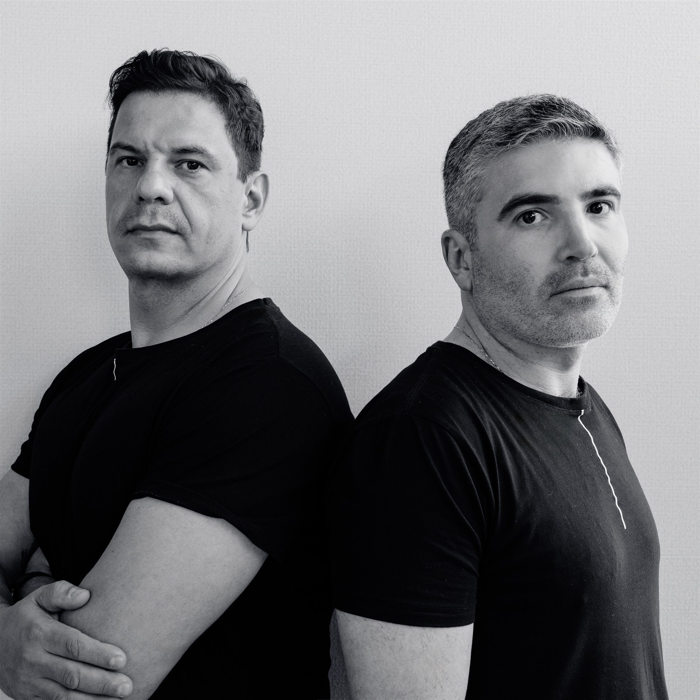

Projetos autorais desde 2016
Onde cada projeto tempersonalidade única.
Da primeira conversa ao último detalhe, criamos espaços que traduzem quem você é.
Conte sua ideia↗Arquitetura contemporânea com identidade, técnica e intenção.
Cada projeto começa
muito antes do desenho.
Começa na escuta, na compreensão da forma como cada pessoa vive e daquilo que deseja sentir.
Nada nasce de soluções prontas ou tendências passageiras. Cada decisão é construída com intenção, respeitando o contexto, a personalidade do cliente e a essência de cada projeto.
Quero conhecer o processo ↗
Matéria que cria identidade.
Madeira, pedra e metal não entram como acabamento. Eles constroem a atmosfera e tornam o espaço reconhecível.
Da fundação
à atmosfera.
Uma equipe, uma visão e o cuidado de conduzir todas as escalas do seu espaço.
Forma, função e contexto reunidos em um projeto inteiramente autoral.
Espaços que
não se repetem.
Uma seleção do trabalho real da TETO. Arraste para explorar e clique para ampliar.

Duas visões.
Um mesmo
propósito.
Franciano Valente e Maick Rocha lideram um time multidisciplinar que combina repertório criativo, domínio técnico e acompanhamento próximo em cada etapa.
Um processo
seguro para algo
extraordinário.
Você não precisa saber por onde começar. Nós conduzimos cada decisão com clareza.
- 01
Escuta
Entendemos sua rotina, necessidades, referências e investimento.
+ - 02
Conceito
Traduzimos tudo em uma direção única para o projeto.
+ - 03
Detalhamento
Definimos materiais, soluções técnicas, interiores e iluminação.
+ - 04
Realização
Acompanhamos para que a intenção chegue inteira à obra.
✓
Perguntas
frequentes.
Que tipos de projeto a TETO desenvolve?+
Projetos residenciais, comerciais e corporativos, da arquitetura aos interiores e ao lighting design.
A TETO acompanha a execução?+
Sim. O acompanhamento mantém decisões técnicas e estéticas alinhadas ao conceito aprovado.
Como acontece o primeiro contato?+
Você conta brevemente seu momento e suas necessidades. A equipe retorna em até 48 horas úteis para orientar os próximos passos.
Seu próximo espaço começa com uma conversa.